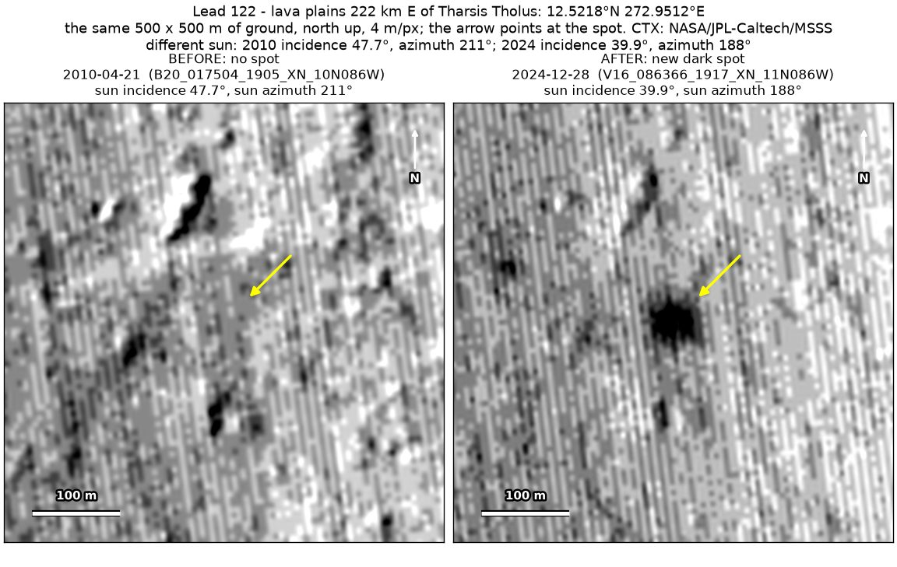
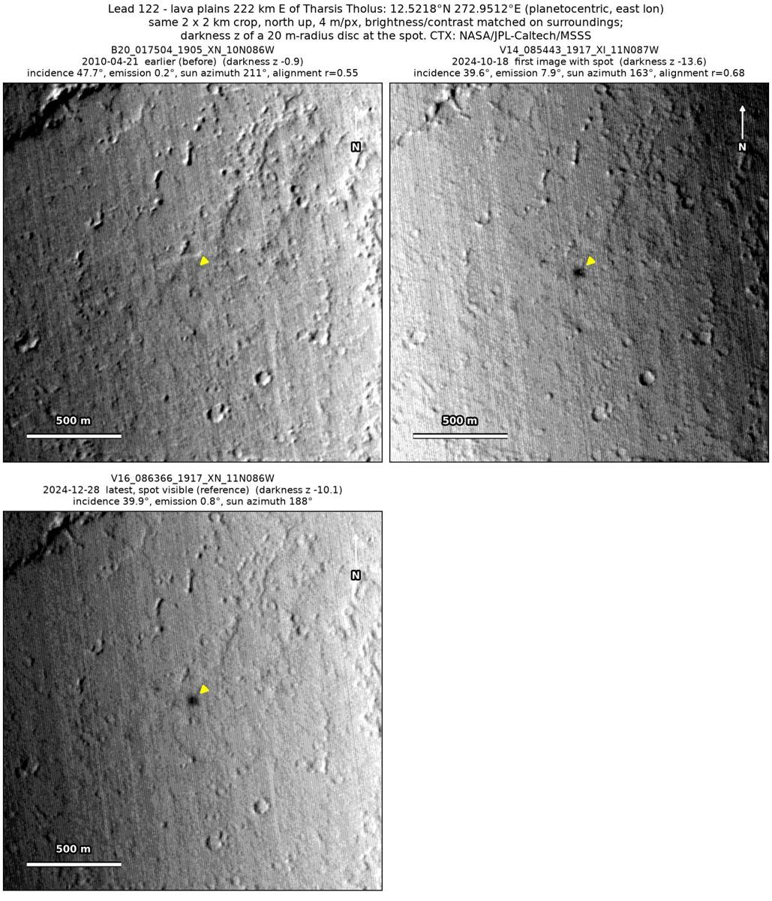
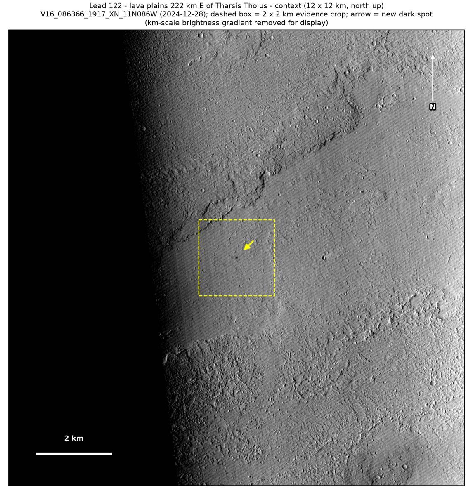

Professor of Mathematics
Paata Ivanisvili
Department of Mathematics, University of California, Irvine

← Possible new impact sites on Mars
Candidate 122: Lava plains 222 km east of Tharsis Tholus
Promising · roughly 70%

What changed. A compact dark spot about 50 m across appeared on lava plains 222 km east of Tharsis Tholus between April 2010 and October 2024, in two CTX images from two orbits.
Why it may be a new impact. The only earlier image, of April 2010, shows plain ground there under a lower sun than the December 2024 image, which would bring out a hollow or knob more strongly, not less, while a dark feature 150 m away shows in it. The spot shows in the same place in the October and December 2024 images, under suns from directions 25° apart, and a compact new dark spot is how the blast zone of a small new crater looks.
- Location
- 12.522° N, 272.951° E (87.049° W)
- Absent
- 21 April 2010
- Present
- 18 October 2024 and 28 December 2024
- Size
- Compact dark spot about 50 m across (50 × 50 m in the December 2024 image)
- Confidence
- Promising candidate; roughly 70% that it is a new impact.
- Caveat
- The only earlier image was taken under a lower sun than the later ones, by more than is accepted for a strong candidate, and the aligned before-and-after difference at the spot is weak, because both later images are noisy and striped. It lies outside every footprint of the high-resolution HiRISE camera; the nearest ends 18 km away. Like every candidate here, it is unconfirmed: see the caveat.

